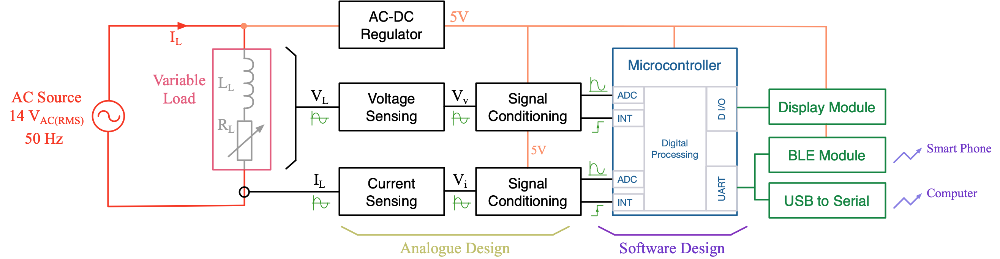
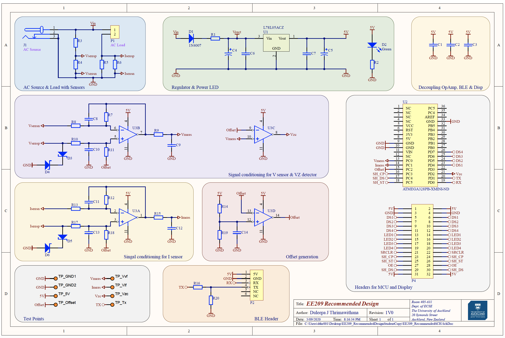
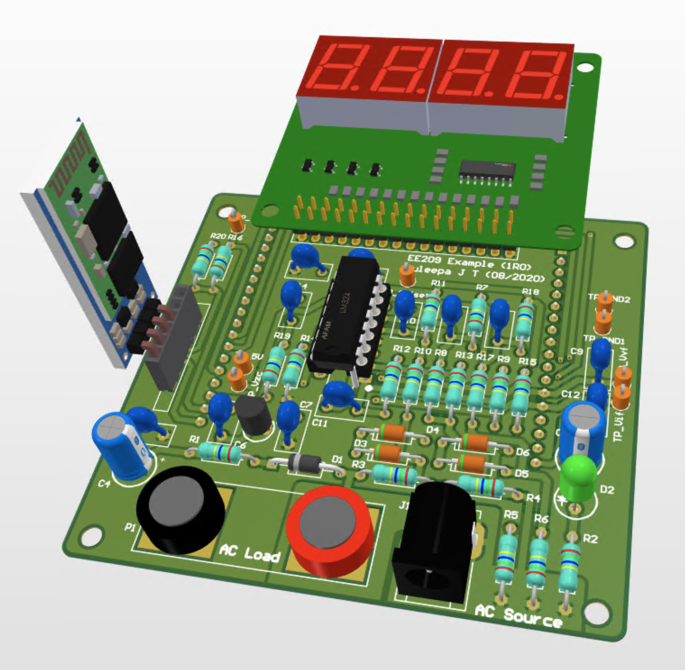
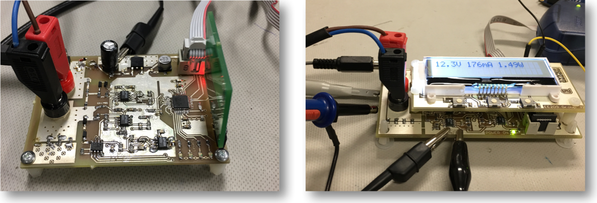
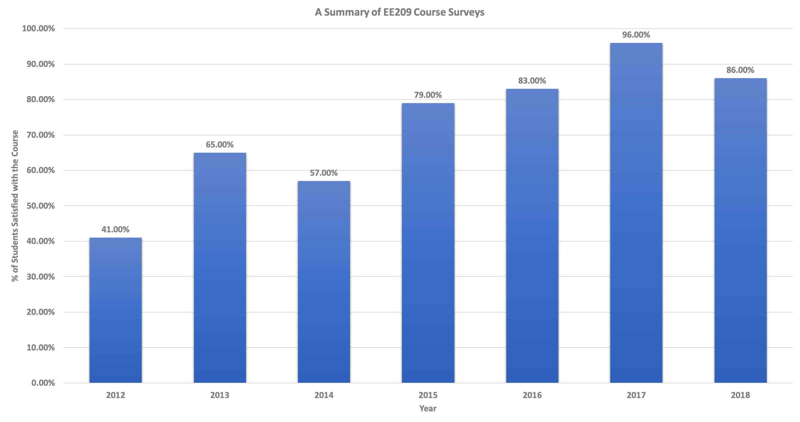
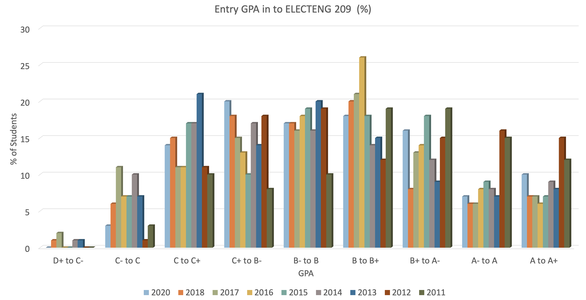

class: title-slide count: false .logo-title[] ## ELECTENG 209 # Analogue & Embedded Software Design ### An Introduction to the Course .TitleAuthor[Duleepa J Thrimawithana] --- layout: true name: template_slide .logo-slide[] .footer[[Duleepa J Thrimawithana](https://www.linkedin.com/in/duleepajt), Department of Electrical, Computer and Software Engineering (2020)] --- name: S1 # The Project - What is this course about and what should students expect to learn? - Gives you an opportunity to put in to practice some of the theories (analogue electronics & embedded software development) they learnt to design and engineer a solution to a 'real life problem' - During this process students will gain fundamental knowledge, experience, skill-set and professional behavior needed to succeed in the more challenging design projects you will engage in the future - What would students design and engineer during this course? - An energy monitor to measure and display the amount of energy consumed by a household appliance - How would students achieve this task? - The voltage and current at the input to appliance is measured using __analogue circuitry__ consisting of sensors, amplifiers and filters - An __embedded software program__ executed on a microcontroller converts the analogue signals to digital form and calculates the energy consumption together with other important information - The information is shown on a __local LCD display__ and also __communicated__ wirelessly using Bluetooth with other smart devices --- name: S15 # System to Implement - To simplify the design, a scaled-down system, which uses a low-voltage AC source is considered - An AC load, consisting of a variable resistor in series with a fixed inductor, is used to emulate an house-hold appliance .center[] --- name: S16 # Key Design Specifications <table class="tg" style="undefined;table-layout: fixed; width: 647px; margin-left:auto; margin-right:auto;"> <colgroup> <col style="width: 333px"> <col style="width: 314px"> </colgroup> <thead> <tr> <th class="tg-dzaw"><span style="color:white">Parameter</span></th> <th class="tg-dzaw"><span style="color:white">Value</span></th> </tr> </thead> <tbody> <tr> <td class="tg-jayl">Source Voltage</td> <td class="tg-jayl"> 14 V<sub>RMS</sub> ± 10% </td> </tr> <tr> <td class="tg-sabo">Source Frequency </td> <td class="tg-sabo"> 50 Hz ± 2% </td> </tr> <tr> <td class="tg-ig71">Load Range</td> <td class="tg-ig71"> 2.5 VA to 7.5 VA </td> </tr> <tr> <td class="tg-sabo">Load Power Factor</td> <td class="tg-sabo">0.75 to 0.99</td> </tr> <tr> <td class="tg-ig71">Measurement Accuracy</td> <td class="tg-ig71">5% of full-scale reading</td> </tr> <tr> <td class="tg-sabo">ADC Conversion Rate</td> <td class="tg-sabo">1 kHz or slower</td> </tr> <tr> <td class="tg-ig71">LCD Display Information</td> <td class="tg-ig71">Voltage, Current, Power and Energy</td> </tr> <tr> <td class="tg-sabo">LCD Display Units</td> <td class="tg-sabo">V<sub>RMS</sub>, A<sub>pk</sub>, W and W.min</td> </tr> <tr> <td class="tg-ig71">LCD Scroll Rate</td> <td class="tg-ig71">1 s</td> </tr> <tr> <td class="tg-sabo">UART Baud Rate</td> <td class="tg-sabo">9600 Baud</td> </tr> <tr> <td class="tg-jayl">Information Transferred Via UART</td> <td class="tg-jayl">Voltage, Current, Power and Energy</td> </tr> <tr> <td class="tg-096r">PCB Size</td> <td class="tg-096r">20000 mm² </td> </tr> <tr> <td class="tg-jayl">PCB Technology</td> <td class="tg-jayl">Double Layer with PTH</td> </tr> <tr> <td class="tg-096r">Device Technology </td> <td class="tg-096r">TH or SMT</td> </tr> </tbody> </table> --- name: S17 # Schematic of Recommended Design .center[  ] --- name: S17 # 3D Render of Recommended Design .center[  ] --- name: S17 # Demo of Expected Final Design .center[ <iframe width="784" height="441" src="https://www.youtube-nocookie.com/embed/5MTaWPhhueY" frameborder="0" allow="accelerometer; autoplay; encrypted-media; gyroscope; picture-in-picture" allowfullscreen></iframe> ] --- class: title-slide layout: false count: false .logo-title[] # Student Designs ### A Sample of Top Designs --- layout: true name: template_slide .logo-slide[] .footer[[Duleepa J Thrimawithana](https://www.linkedin.com/in/duleepajt), Department of Electrical, Computer and Software Engineering (2020)] --- name: S20 # Top Designs from the Past (PI) .center[  .credits[ SMT designs with a digitally controlled gain stage (left) & a LCD screen (right) developed by teams in 2016. ] ] --- name: S21 # Top Designs from the Past (PII) .center[ <img src="img/2018Designs.png" height="325"> .credits[ A couple of the SMT designs that were developed by teams in 2018. ] ] --- name: S22 # Top Designs from the Past (PIII) .center[ <img src="img/2018Designs2.png" height="400"> .credits[ A [web application](https://rabadunk.github.io/group26/) developed by a team in 2018 to log information. ] ] --- class: title-slide layout: false count: false .logo-title[] # Statistics ### Course Feedback & Student Performance --- layout: true name: template_slide .logo-slide[] .footer[[Duleepa J Thrimawithana](https://www.linkedin.com/in/duleepajt), Department of Electrical, Computer and Software Engineering (2020)] --- name: S23 # Course Feedback .center[  ] --- name: S24 # Entry Performance .center[  ] --- name: S25 # Past Grades .center[ <img src="img/PastGrades.png" height="450"> ]